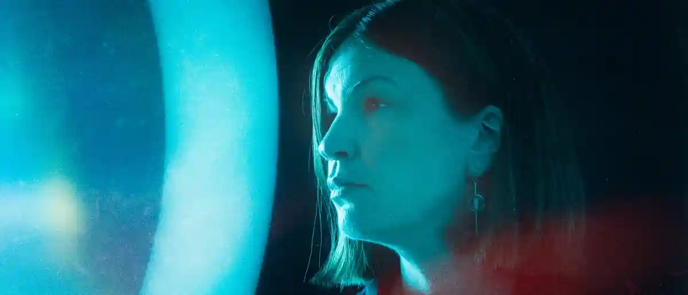
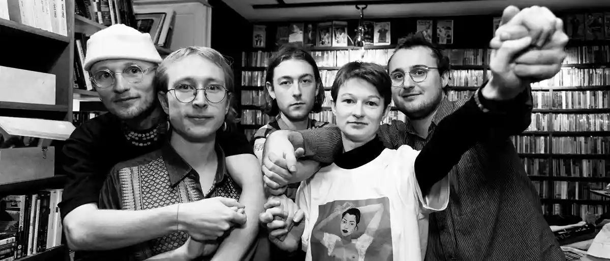

RADAR
SKAL
BLIVE!
Radar har i over 20 år været en central del af Aarhus' musikscene med omkring 120 arrangementer om året. Fra januar 2025 mister vi vores status som regionalt spillested, hvilket skaber en usikker fremtid for os og byens musikmiljø.
Vi har brug for din hjælp til at sikre, at Radar fortsat kan være et hjem for vækstlaget, nichegenrer og unikke musikoplevelser. Din støtte gør en forskel – for os, for musikken og for Aarhus.
Onsdag
29.01.2025
Køb BilletANNE ROEMER
Fredag
31.01.2025
Køb BilletBARYL
Lørdag
01.02.2025
Køb Billet